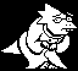
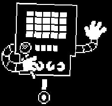
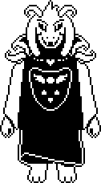

Undertale
Lore about Undertale
by Jorge R-Aug 29th 2024
Story
Once upon a time, two races ruled over Earth: Humans and Monsters. One day, war broke out between the two races. After a long battle, the humans were victorious. They sealed the monsters underground with a magic spell. The humans’ fear of monsters was based mainly on the monsters’ ability to absorb human SOULs. Trapped underground, the monsters explored their new environment and slowly set up a society there.
In the year 201X, a human child called Chara fell into the Underground. Chara was adopted by the Dreemurr family, the King and Queen of monsters and their son Asriel, and lived happily with them for some time. Chara devised a plan to collect human SOULs and deliberately ate buttercups to poison themself. Asriel absorbed Chara’s SOUL, and as a powerful composite being, they crossed the barrier and went to the human village. Assuming that Asriel had killed Chara, the humans attacked him. Chara’s SOUL urged him to fight back, but Asriel resisted. Mortally wounded, he stumbled back to the monster castle and died.
The king and queen were devastated, having lost both their children in one night. Asgore, the king of monsters, declared war on humans, and decreed that every human who fell would be killed. Once seven SOULs were collected, their power would be used to shatter the barrier and set monsters free. Then humanity would be destroyed, and monsters would live on the surface in peace. Disgusted at her husband’s actions, the queen, Toriel, exiled herself and disappeared.
Sometime between Chara’s death and the arrival of the player character, six humans fell into the underground, and all of them were killed, their SOULs collected by Asgore. Toriel tried and failed to save all of them. Also during this time frame, Gaster built the CORE, and fell into it. After Gaster dies, Alphys takes over as Royal Scientist. She starts experimenting with the substance called “determination,” which human SOULs have and monsters do not. She tries to create synthetic souls by injecting determination into the bodies of dying monsters. She assumed that the monsters would disintegrate and their SOULs would remain. Instead, the monsters come back to life, and then melt together into mutated amalgams. Alphys told no one about her horrifying mistake, and it heavily impacted her self-esteem. Meanwhile, her experiments led her to inject determination into a flower in Asgore’s garden, which happened to have Asriel’s dust on it. Asriel’s conscience was reborn in the flower, but, lacking a SOUL, he could not feel any compassion or empathy.
Asriel called for his parents, but noticed with horror that he could not feel any love or affection for them. He tried to commit suicide, but woke up again in the garden. He soon realized that he could control timelines by being able to SAVE and reset. Calling himself Flowey, he started to play around. Sometimes he helped everyone around him (without feeling any true affection for them), and sometimes he killed them, just to see what would happen. Flowey became a ruthless sociopath, and eventually grew bored of other monsters, seeing them as nothing but scripted actors.
Frisk, the player character, arrives in the Underground and is the first human to arrive in a while. Having more determination than Flowey, they inadvertently steal the SAVE/Reset ability. They have a run-in with Flowey, who tries to kill them, but is thwarted by Toriel. Toriel graciously adopts Frisk, but Frisk is anxious to get home. Toriel is reluctant to let Frisk go, because she is certain that Asgore will kill them. She fights Frisk to make them prove their worth, and when Frisk survives, she lets them go, if she is not killed.
The rest of the game depends heavily on the player’s actions. a Neutral run will have Frisk explore the various areas of the game, talking to monsters or killing them, or both, until they reach Asgore’s castle. Flowey will arrive and kill Asgore, if the player hasn’t already, and prevent Frisk from taking Asgore’s SOUL to get back to the surface. Absorbing the six human SOULs, Flowey becomes a godlike monstrosity and takes full control of the world, using his powers to torment Frisk. The SOULs rebel against Flowey, and Frisk survives. The following endings depend on the player’s actions, and to explain them all is an answer in itself. In any case, Asgore is dead, monsters are still trapped, and ne of the four remaining bosses (Toriel, then Undyne, then Mettaton, then Papyrus… then the Annoying Dog) will take over as ruler of the Underground until further notice.
In a Pacifist run, Frisk will have gone out of their way to make friends with every monster in the Underground, especially Papyrus and Undyne. After the Neutral ending following Flowey’s boss battle, Frisk will return to the Underground by loading their SAVE file, and befriend Dr. Alphys. Alphys will gain the confidence to face her mistakes, and resolve to bring the Amalgamates home to their families. When trying to leave the True Lab, the elevator malfunctions and Frisk is deposited in New Home. Reaching The End, Frisk is prevented from fighting Asgore by Toriel, and reunites with all of their friends. However, Flowey manipulated them all into gathering in one place, so he could steal their SOULs. Flowey absorbs not only the six human SOULs, but the SOULs of every monster in the Underground. He becomes Asriel Dreemurr, who fights Frisk in an attempt to make them stay, believing them to be Chara. Frisk manages to use their innate kindness to reach through the God of Hyperdeath and find the innocent child inside. Asriel reverts to his child form, and recognizes that Frisk is not Chara. He apologizes for his mistakes, and Frisk (usually) forgives him. He releases all of the SOULs, shattering the barrier, but dooming him to turn back into a flower. Frisk is once again reunited with their friends, and all of them ascend to the surface to start a new life.
In the genocide run, the player/Frisk ruthlessly slaughters all of the monsters in the Underground. When they kill Undyne, Undyne uses sheer determination to put herself back together (much like you during the Pacifist final battle) and become Undyne the Undying, a formidable enemy. However, eventually she is defeated, and Frisk continues to the castle, still going out of their way to hunt down and kill every single monster. Slowly, the vicious spirit of Chara awakens within Frisk and starts to possess them. Flowey appeals to them as a friend, and as a sibling, but realizes that Chara would be willing to kill him as well. Sans, who is aware of the player’s existence and godlike power, realizes that if Frisk/Chara should kill Asgore, the world would be permanently tainted. In a last-ditch effort to prevent destruction, he fights the player in a truly epic boss battle. However, he eventually fails, and Frisk/Chara/the player kills Asgore, and hacks Flowey to pieces. Chara approaches the player/whatever’s left of Frisk, admiring their lust for power and suggesting that they erase the world. Whatever the player chooses, Chara will take over anyway. The only way to restore the game is to sell your SOUL to Chara. If the player attempts a Pacifist run after completing genocide, it will be as normal until the very end, where Chara will murder everyone once they reach the surface.
So, how do you want the story to end?
Characters
Frisk is the playable character, main protagonist, and the eighth human in Undertale. After falling into the Underground, they venture to return to the surface, whether neutrally, genocidally, or peacefully. The latter case, the True Pacifist Route, is the only one where Frisk's name is revealed, emphasizing they are not the "fallen human" that is named by the player.
Flowey is the first major character that the protagonist encounters in Undertale. Flowey serves as the main antagonist for the Neutral and True Pacifist routes, and can be considered a deuteragonist for the Genocide Route. He provides an introduction to the mechanics of encounters by sharing "friendliness pellets," which are actually harmful bullets, revealing his philosophy of "KILL or BE KILLED." He serves as the final boss of the Neutral Route.

Toriel is the second major character the protagonist meets in Undertale. She saves the protagonist from Flowey and guides them through the Ruins, wishing to protect and to teach them to avoid the dangers of the Underground. Toriel is the former queen of the monsters, the ex-wife of Asgore, the mother of Asriel, the adoptive mother of the first human, and the first boss, as she guards the Ruins exit.

Sans is the older[1] brother of Papyrus and a major character in Undertale. He first appears in Snowdin Forest after the protagonist exits the Ruins. Sans is the deuteragonist of the Neutral and True Pacifist routes, in which he keeps an eye on the protagonist throughout the game. He is also the final boss of the Genocide Route.
Papyrus is Sans's brother, a major character, and the second boss in Undertale. Papyrus wants to become a Royal Guard to gain fame and friends. He patrols and prepares many of Snowdin Forest's puzzles in hopes of capturing a human and earning his goal.


Undyne is a major character and the third boss in Undertale. Undyne leads the Royal Guard, which protects Asgore and patrols the Underground to find humans. She pursues the protagonist throughout Waterfall, though she is inadvertently thwarted by Monster Kid. If you choose the Genocide route then you get a different version of Undyne named Undyne the Undying
Alphys is a female, reptilian monster that lives in the lab in western Hotland. She is the incumbent Royal Scientist, a position she was awarded by Asgore after the disappearance of her predecessor. She is a major character in Undertale and the only one not to fight the protagonist.

Mettaton is a major character and the fourth boss in Undertale. Mettaton is a robot with a SOUL, whose body was built by Alphys. He is the sole television star of the Underground. Mettaton poses as an entertainment robot turned human killing robot in Hotland, though he later reveals the truth to the protagonist at the end of the CORE. He has multiple form, but the last form is only available through the Genocide Route, and can be defeated in 1 hit. So not much of a battle.

Asgore Dreemurr is the ruler of the Underground and its denizens, monsters. He serves as one of the main antagonists of Undertale, planning to kill seven humans and use their SOULs to break the barrier that traps everyone Underground. However, he is not evil or malicious. Asgore is the ex-husband of Toriel, father of Asriel, adoptive father of the first human, and the penultimate boss of the Neutral Route.
Asriel Dreemurr is the biological child of Toriel and Asgore and the adoptive brother of the first human. He serves as the final boss of the True Pacifist Route, replacing Asgore in New Home. Despite his late introduction, his presence as Flowey as well as in Undertale's backstory makes him a major character.

Chara, also known as the fallen human, is the first human to fall into the Underground. Chara is their "true name" on the naming screen, though their name typically varies on what the player enters. They are distinct from the eighth fallen human, who is the protagonist of Undertale. As a major character, Chara's primary role is described through the Dreemurr's backstories, though Chara also appears at the end of the Genocide Route.
Gameplay
Undertale is a role-playing video game that uses a top-down perspective. In the game, the player controls a child and completes objectives in order to progress through the story. Players explore an underground world filled with towns and caves, and are required to solve numerous puzzles on their journey.
Different Endings
Undertale has three different main endings (Neutral, True Pacifist, and Genocide) and a fourth miscellaneous ending (Hard Mode).
Neutral Ending
Neautral Route: This ending occurs when one of these conditions are met:
- The protagonist does not befriend all plot pivotal characters
- The True Lab has not been explored.
- The protagonist kills any, but not every, monster.
The Neutral Route ends with the protagonist escaping the Underground alone. There are a variety of different possible variations of this ending depending on the choices made throughout the game.
True Pacifist Route
True Pacifist Routeending occurs when all of these conditions are met:
- A Neutral Route has been completed. (A reset is not required, only reloading the player's SAVE file afterwards.)
- No monsters were killed throughout the game. (The protagonist cannot gain any EXP, and as a result, they cannot progress past LV 1.)
- Papyrus, Undyne, and Alphys have been befriended.
- The True Lab has been explored.
The True Pacifist Route ends with the barrier being broken, and the protagonist and the monsters of the Underground being able to leave. Additionally, this route features the True Pacifist Ending Credits.
Genocide Route
The Genocide Routeending occurs only when all enemies in each area (Ruins, Snowdin Forest, Waterfall, Hotland/CORE) are killed until no one remains. This includes all bosses.
Completing the Genocide Route leads to the destruction of the game's world. Upon re-launching the game after a completed Genocide Route, the first human asks the protagonist to give up their SOUL to them in exchange for the recreation of the world. This effectively acts in the same way as a True Reset from the True Pacifist Route, but it also permanently alters the endings of any later Genocide or True Pacifist endings (Soulless Genocide & Soulless Pacifist). Neutral endings after a Genocide Route are unaffected.
Alternate ending (Hard Mode)
Hard Mode This mode is activated when naming the first human "Frisk". It is a difficulty enhancing mode that consists of slight dialogue changes and more difficult monster encounters (with some exclusive to this mode, while others can be found in the CORE). Hard Mode only lasts until the end of the Ruins, similarly to the Undertale Demo. After defeating Toriel, the Annoying Dog arrives to announce the end of Hard Mode.